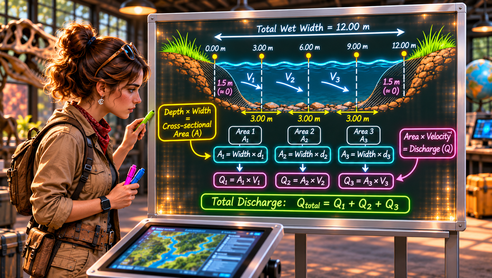

Three-station training survey. The two edge strips are treated as approximately zero flow; this is a simplified estimate, not a full professional discharge survey.
HYDROLOGY LAB / 01● ONLINE
- 01 AREA
- 02 DISCHARGE
- 03 TOTAL

Three-station training survey. The two edge strips are treated as approximately zero flow; this is a simplified estimate, not a full professional discharge survey.